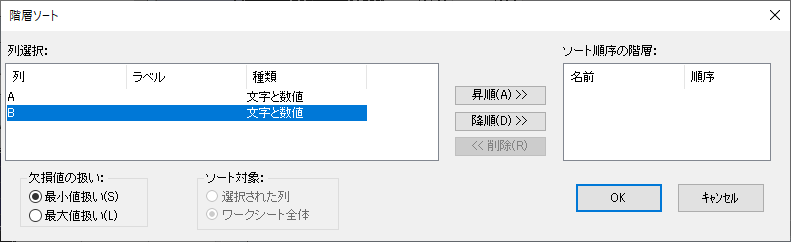
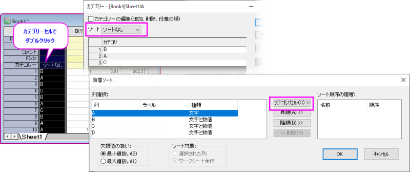

ワークシートデータのソート
Wks-Sort-Data
個々の列、複数列、ワークシートデータ範囲、ワークシート全体に対してソートすることができます。Originは単純なソートだけでなく、ネストした階層ソートを行うことができます。
単純ソート
単純なソートでは、キーとなる列とソートの順序を使って、指定したデータがソートされます。
選択したデータの単純ソートを実行するには
- メニューから、「ワークシート：ソート(列)」を選択します。
- サブメニューから「昇順」または「降順」を指定します。
- 1列または1列内の範囲を選択している場合、Originは選択したデータのみをソートします。
- ワークシートの列やセルの範囲を選択している場合、Originは、最も左のデータをキーとして選択したソート順で選択したデータのみをソートします。
- 選択した列または、最も左の選択列がカテゴリー列に設定されている場合、カテゴリ順でソート可能です。ソート = 昇順または降順の場合、列はこの順序で並べ替えられます。ソートなしの場合、最初に列に出現するカテゴリー順で並べ替えられます（たとえば、BBACBはBACに並べ替えられます）
行の範囲を選択していて、列全体を選択していない場合、利用できるソートメニューコマンドは、「ワークシート：ソート(領域)」になります。
ワークシート全体に対して単純ソートを実行するには
- 「ワークシート：ソート(ワークシート)」を選択します。
- 昇順または降順を選択します。
- 最も左の列がテキストや数値データの場合、ワークシート全体が最も左の選択列によりソートされます。
- 最も左の選択列がカテゴリー列に設定されている場合、カテゴリ順でソート可能です。ソート = 昇順または降順の場合、列はこの順序で並べ替えられます。ソートなしの場合、最初に列に出現するカテゴリー順で並べ替えられます（たとえば、BBACBはBACに並べ替えられます）
 | Text/CSVとExcel以外のデータコネクタでインポートされたデータは、デフォルトで編集にロックされています。ロックを解除するには、コネクタアイコン をクリックし、インポートしたデータのロックを解除を選択します。 をクリックし、インポートしたデータのロックを解除を選択します。
|
階層(ネスト)ソート
選択したデータの階層ソートを実行するには
- 「ワークシート：ソート(列)： カスタム」を選びます。
または、
- 「ワークシートデータ操作」ツールバーの「ソート」ボタン
 をクリックします。
をクリックします。
ワークシート全体に対して階層ソートを実行するには
- ワークシート全体を選択して、「ワークシート：ソート(ワークシート)： カスタム」を選びます。
または、
- ワークシート全体を選択して、「ソート」ボタンをクリックします。
階層ソートダイアログボックス
- 
「列選択」リストボックスから第一キーとする列を選択し、「昇順」または「降順」ボタンを選択します。次に「列選択」リストボックスから第二キーとする列を選択し、「昇順」または「降順」ボタンを選択します。 必要に応じて他のキー列を追加します。
OKをクリックすると、Originは、第一キーの列を使って指定したソート順序で選択したデータをソートします。 キー列の中に同じ値が複数ある場合、それに対応する行の第二キー列の値を使って、ソートします。この階層ソート処理が、階層ソートの基準リストボックスの最後の列まで続けられます。
カテゴリーデータのカスタムソート
階層ソートダイアログを使って、ワークシートをカテゴリデータ列でカスタムソートできます。
- ワークシートをアクティブにして、メニューからワークシート：ソート(ワークシート)：カスタムを選択します。
- 左パネルの列選択の項目で、カテゴリー列に設定されている列を選択します。中央パネルにカテゴリボタンが表示されます。
- カテゴリ順ボタンをクリックして選択したカテゴリ列を階層ソートの基準に追加します。
- ワークシートラベル行のカテゴリセルに表示される順序でカテゴリ列がソートされます
- カテゴリ列がソートなしの場合、そのワークシート列で出現した順でソートされます。なお、ワークシート付加ワークシートラベル行のセルをダブルクリックしてカテゴリダイアログを開き、ソート順序を変更できます。
- 階層ソートは複数のカテゴリ列に対して実行できます。複数列ある場合は、右パネルの列の順でソートの優先順位が決まります。
- 